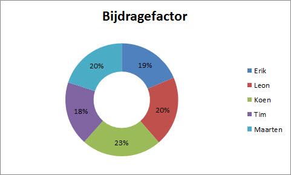

Inleiding
Dit verslag beschrijft het proces zoals projectgroep 5 dat gevolgd heeft tijdens het ontwikkelen van een besturing voor een iRobot Roomba stofzuiger. Aan de hand van dit verslag kan de projectgroep zichzelf evalueren en eventueel verbeteringen in volgende projecten doorvoeren. Dit verslag is naast de projectgroep bestemd voor haar begeleider, zodat hij een inzage in het projectwerk van de groepsleden kan krijgen.
De projectgroep kreeg de opdracht een Roomba stofzuiger te kunnen besturen via een User Interface. Diezelfde User Interface moet ook een Roomba simulator kunnen aansturen. In dit verslag wordt beschreven hoe het proces van begin tot eind is verlopen. De opdracht luidde letterlijk: 'Lever een werkend prototype, van een Roombacontroller, die kan worden gebruikt om een iRobot Roomba robotstofzuiger mee te besturen'.
Dit verslag bestaat, naast deze inleiding, uit vijf hoofdstukken. Ten eerste een opdrachtbeschrijving, waarin de ontvangen opdracht wordt toegelicht. Daarnaast is een hoofdstuk over de planning opgenomen, waarin het plannen van het project is beschreven. Vervolgens wordt de samenwerking toegelicht, waarin ook een bijdragefactor is aangegeven. Tenslotte geeft elk projectlid een individuele reflectie en wordt er een conclusie over het totale project gegeven.
Opdracht
Dit hoofdstuk beschrijft de opdracht voor dit project, de probleemstelling en de gekozen aanpak.
Opdracht
De opdracht die de projectgroep heeft gekregen luidt als volgt: 'Lever een werkend prototype, van een Roombacontroller, die kan worden gebruikt om een iRobot Roomba robotstofzuiger mee te besturen'.
De projectgroep heeft de opdracht opgepakt als het kunnen besturen en uitlezen van de sensoren die op de Roomba stofzuiger aanwezig zijn. De Roomba is te bedienen via de User Interface en ook de sensoren zijn uit te lezen via deze interface. Er wordt een simulator ontwikkeld die dezelfde functies heeft als de "echte" Roomba. Het verwerken van alle gegevens moet in de software Rose RealTime gebeuren.
Probleemstelling
Hogeschool van Arnhem en Nijmegen wilde een - via de computer te besturen - Roomba met hierbij een simulator en heeft daarvoor de hulp van de projectgroep ingeroepen. Aan de hand van een plan van aanpak wordt de opdracht door de projectgroep uitgevoerd.
De stofzuiger beschikt over een seriele ingang, waarmee de standaard besturing van de Roomba te overschrijven is. Deze poort neemt signalen aan die volgens een datasheet worden geïnterpreteerd. De projectgroep moet nu drie projectonderdelen ontwikkelen:
De aansturing. Dit onderdeel, dat volgens de projectspecificatie verplicht met Rational Rose Realtime ontwikkeld moet worden, ontvangen signalen die de Roomba verstuurt, ontvangt andere signalen, 'bedenkt' en planning voor de Roomba en stuurt deze planning in voor de Roomba te begrijpen signalen terug.
De simulator. Aangezien de Hogeschool slechts twee stofzuigers beschikbaar heeft voor vijf projectgroepen, moest er een andere testmethode ontwikkeld worden. Deze simulator kan de signalen van de aansturing ontvangen, en aan de hand van een geschetste 'kamer' sensorwaarden genereren en terugzenden.
De user-interface. Deze omgeving draait op een computer en biedt voor menselijke gebruikers een methode om de sensorgegevens van de stofzuiger in te zien. Tevens kunnen instructies aan de Roomba worden teruggezonden.
Aanpak
De projectgroep heeft het project aangepakt door eerst een serie documenten op te stellen, waarin planningen worden gemaakt en het product in onderdelen wordt uitgesplitst. Deze documenten zijn de volgende:
Plan van aanpak
Als eerste is er een plan van aanpak gemaakt. Hierin staan vermeld:
- Achtergronden van het project
Informatie over de opdrachtgever en de opdrachtnemer staan hier vermeld.
- Projectresultaat
Hierin staat vermeld dat er wordt gewerkt volgens het SMART principe:
Specifiek,
Meetbaar,
Acceptabel,
Realistisch en
Tijdgebonden.
- Projectactiviteiten
a. Initiële fase
b. Definitie fase
c. Functioneel ontwerp fase
d. Technisch ontwerp fase
e. Realisatie Fase
f. Nazorg Fase
- Projectgrenzen
Wat hoort nog wel bij het project en wat niet.
- Kwaliteitsbewaking
- Projectorganisatie
Hoe ziet de projectgroep eruit.
- Planning
- Kosten en baten
- Risico's
Functioneel Ontwerp
In het functioneel ontwerp staat beschreven hoe het eindproduct functioneel gaat werken. Door middel van schema’s, tabellen en illustraties wordt duidelijk hoe het eindproduct werkt. Daarnaast staat er de volgende informatie in beschreven:
- Globaal invoer-proces-uitvoer schema
- Functionele specificaties
- User interface
- Gebruikershandleiding
Technisch ontwerp
In het technisch ontwerp staat ontwerpen hoe de functionele eisen technisch worden verwerkt. Er staat in beschreven hoe de softwarestructuur er uit komt te zien en welke hardware er wordt gebruikt. Daarnaast staan de volgende schema’s in het technisch ontwerp:
- Hiërarchisch schema
- Architectuurschema
- Invoer-proces-uitvoer schema
Procesverslag
Hierin staat vermeld hoe het project procesmatig is verlopen. Welk project lid heeft welke taak op zich genomen en wat is het totaal aandeel van de projectleden in het project.
Productverslag
Hierin staat uitgebreid beschreven hoe het product tot stand is gekomen. Alle functionele en technische informatie is in dit rapport terug te vinden met de motivatie waarom er voor deze functionele of technische oplossing is gekozen.
Handleiding
Hierin staat vermeld hoe de Roomba gebruikt en onderhouden kan worden. Het gebruik van de simulator staat hierin ook uitgelegd. Tevens staat er vermeld hoe de Roomba aangesloten moet worden en wat te doen bij problemen.
Planning
Planning en Activiteiten
Er wordt gewerkt volgens de volgende structuur.

- Initiële fase
In deze fase onderzocht de projectgroep de haalbaarheid van het project tegenover de wensen van opdrachtgever. De mogelijkheden en eisen van de projectgroep zijn onderzocht, zodat het resultaat zo goed mogelijk aan de eisen en wensen voldoet. Tijdens deze fase heeft de groep de documenten zoals die voor de Roomba beschikbaar zijn bekeken, een plan van aanpak opgesteld aan de hand van de opdrachtbeschrijving en de benodigde software geinstalleerd.
- Definitie fase
In deze fase definieert de projectgroep hoe zij het beste aan de eisen van de klant kan voldoen. Tijdens deze fase zijn afspraken gemaakt over de rollen binnen het project, het opleveren van producten en het beheersen van het projectproces.
- Functioneel ontwerp
In deze fase maakt de projectgroep van de eisen een gedetailleerde functionele specificatie. Hierin staan de functies van ons product uitgebreid beschreven.
- Technisch ontwerp
In deze fase vertaalt de projectgroep functies uit de vorige fase naar een technisch schema/ontwerp. Dit gebeurt zo nauwkeurig mogelijk zodat bij de volgende fases geen verassingen of problemen op treden. Tijdens deze fase worden technische details uitgezocht en gedocumenteerd.
- Realisatie fase
In deze fase wordt het technisch ontwerp uitgevoerd. Er wordt een prototype ontwikkeld. De projectgroep heeft in deze fase de daadwerkelijk programmatuur ontworpen, ontwikkeld, en geschreven. Daarnaast is in deze fase de projectdocumentatie opgesteld.
- Testfase
In deze fase wordt het ontwerp getest door middel van een prototype, en wordt er gekeken of het project aan de eisen voldoet.
- Nazorg
In deze fase wordt bekeken of de klant nog uitbreidingen wenst. Ook maken we in deze fase een handleiding en zorgen we voor verdere documentatie. Het voordeel van het werken op de bovenstaande manier is dat het aantal fouten dat gemaakt wordt tot het minimum is gereduceerd. Dit omdat stap voor stap elke fase gestructureerd wordt afgehandeld.
Problemen
Tijdens het project hebben zich een aantal problemen voorgedaan, die door de projectgroep opgelost moesten worden om het project tot een goed einde te brengen. Het oplossen van deze problemen zijn een belangrijk onderdeel van het leren binnen de projecten aan de opleiding ESE, en de belangrijkste problemen zijn daarom in dit rapport opgenomen. Deze problemen omvatten ondere andere:
Het installeren van de Rational Rose Realtime IDE. Het installeren van de programmeeromgeving is een omvangrijke taak, waarvoor ingewikkelde processen zoals het aanpassen van de Windows Enviroment Variable een vereiste is. Door de complexiteit van deze installatie ging er tijd verloren die aan andere projecttaken kon worden besteed. Dit probleem loste zichzelf na enige tijd vanzelf op, en de projectgroep kon daarna met behulp van de aangeboden lessen met deze IDE aan het werk.
Instellen Roomba. Het instellen van de juiste modes op de Roomba is niet uitgebreid gedocumenteerd, en vereiste dus enig uitzoekwerk. Dit zou opgelost kunnen worden door een betere basisdocumentatie vanuit iRobot. De groep heeft dit probleem verder kunnen oplossen door een eigen documentatie over de Roomba bij te houden waar ieder groepslid gebruik van heeft kunnen maken.
Incorrect SCI document. Van het documentatie document zoals verspreidt door iRobot zijn verschillende versies in omloop, die meerdere instructienumbers aan de zelfde opdrachten toekent. Dit levert enige incompatibiliteit met andere projectgroepen op.
Afvallend projectlid. Halverwege het project besloot een van de projectleden zijn opleiding af te breken, waardoor de andere deelnemers aan het project zijn taken moesten overnemen en de planning moest worden aangepast.
Ontbrekende initiele kennis. Omdat niemand in de projectgroep ervaring had met de Rational Rose Realtime IDE, ging er veel tijd verloren met het onder de knie krijgen van de mogelijkheden van dit programma. De projectgroep realiseert zich dat dit de opzet van het project is, en heeft van dit probleem een leermogelijkheid gemaakt. Desalniettemin blijkt dat deze IDE weinig tot geen hobbyisten aantrekt, waardoor probleemoplossing en debugging informatie op internet gebrekkig is.
Samenwerking
Bijdragen
Op de volgende schema's is te zien wat het aandeel van welk project lid was in welk onderdeel.
Individuele bijdragefactor
De individuele bijdragefactoren in het project zijn door de projectgroep als volgt bepaald:
| Erik | 0.93 |
| Léon | 1.00 |
| Koen | 1.15 |
| Tim | 0.92 |
| Maarten | 1.00 |
Voor deze verdeling is gekozen omdat de groep vond dat het projectonderdeel waaraan Erik en Tim gewerkt hebben - de user-interface - veel vertraging opliep en minder snel vooruitgang boekte dan bij andere groepen. Dit onderdeel vereiste hulp van andere projectleden, met name Koen. De verschuiving in inzet is de in bijdragefactorverdeling aangegeven.

Resultaat
Het resultaat van ons project is een User Interface waarmee de Roomba aan te sturen is. In deze User Interface zijn verschillende sensoren uit te lezen die op de Roomba zitten. Er is een simulator ontworpen die precies hetzelfde kan als de “echte” Roomba. Ook deze simulator is aan te sturen via de User Interface.
Vaardigheden
Bij aanvang van het project was het opzetten van het technisch ontwerp lastig. Doordat nietmand bekend was met de Rose Realtime IDE was het lastig uit te stippelen hoe groot de rol van de ontwikkelde software in dit programma zou zijn. Dit is een vaardigheid die de groep gemist heeft bij dit project, hoewel dit vermoedelijk de verwachting van de opdrachtgever is. Vaardigheden met deze IDE zijn door verscheidene practica opgedaan en uitgebreid, waardoor de projectleden aan het eind van het project een aardige basiskennis hebben opgebouwd.
Een vaardigheid die wel aanwezig was in de projectgroep is programmeren in C-achtige talen zoals C++ en C#, hoewel sommige projectleden hierbij sterk achterliepen op anderen. Ook op dit gebied is veel bijgeleerd, en de nieuw opgedane kennis kan in volgende projecten gebruikt worden.
Het was voor de projectleden lastig om het overzicht te bewaren over het project en om de planning bij te houden. Daarom moest er erg veel gedaan worden aan het einde van het project. De projectleden hebben geleerd om elkaar objectief en eerlijk te beoordelen. Als een project lid negatief werd beoordeeld dan probeerde dit lid het negatieve punt te verbeteren.
Individuele reflectie
Reflectie Maarten
Ik ben uiteindelijk tevreden hoe dit project verlopen is. De opdracht was leuk en uitdagend. Met name het programmeren in Rose RealTime was een grote uitdaging. Dit omdat hier nog niemand uit onze groep er ervaring mee had. Zowel de onderlinge relatie als de samenwerking was goed. Op software gebied heeft iedereen ervaring opgedaan. Een verbeterpunt is het nakomen van de planning. Halverwege gingen we achterlopen en kwamen hierdoor in tijdnood. Ik ben tevreden met het product dat we gemaakt hebben.
Reflectie Koen
Dit project is in mijn ogen met enige hobbels voor de rest goed verlopen. In het begin waren er opstartproblemen, wat kwam omdat niemand ervaring had met het overgrote softwarepakket genaamd Rose Realtime. Nadat Stefan met de opleiding was gestopt, ben ik met Maarten gaan werken aan het hoofdprogramma in Rose Realtime. Gelukkig had ik dit programma snel door, waardoor we niet veel achter kwamen te lopen. Plannen is iets wat dit project nog iets beter had gekund, al hebben we op het einde het project met tijd over af gekregen. Al met al ben ik heel tevreden over het verloop van het project.
Reflectie Léon
Naar mijn menig is dit project goed verlopen. Het ging enigsinds langzaam van start, maar nadat de vertragende factor - het ongemotiveerde projectlid Stefan - zijn opleiding afbrak hervond de groep zijn productiveit en ging het project echt van start. Planning in dit project ging beter dan in de voorgaande, en het project werd deze keer met een tijd-marge aan het eind afgerond. Enige verbeterpunten voor mijzelf heb ik ook gevonden: het verdelen van tijd en concentratie tussen projectwerk, ander schoolwerk, vrije tijd en (bij-)banen liet ietwat te wensen over, en dit is een pijnpunt waar ik in volgende projecten aan wil werken.
Reflectie Tim
Ik ben dit project ingegaan met het idee, ohjee dit word een project zonder hardware. Hardware is de kant waar ik vaak toch meer vermaak in vind. Ik heb in dit project aan de documentatie en de GUI gewerkt. Tijdens het werken in de GUI heb ik een hoop nieuwe functies geleerd enof verder ontwikkeld met name signals en slots, en het toepassen van andermans headerfiles. De samenwerking ging prima en niemand heeft negatieve opmerking gekregen op hun ipv. Ik heb dit project als prettig ervaren ondanks de weinige hardware.
Reflectie Erik
Ik denk dat als totaalplaatje het project wel goed verlopen is. Aan het begin ging het wat moeizaam maar na een aantal weken ging het een stuk vlotter. Dit had naar mijn mening deels te maken met Stefan een projectlid dat gestopt is met de opleiding. Ik vond het project zelf wat minder aantrekkelijk omdat er geen hardware in zat, wat mij toch meer trekt dan software. Wat wel een pluspunt is aan dit software project is dat nu meer van het programmeren begrijp wat handig is in de komende projecten. Uiteindelijk denk ik dat we wel met een goed gevoel dit project kunnen afsluiten.